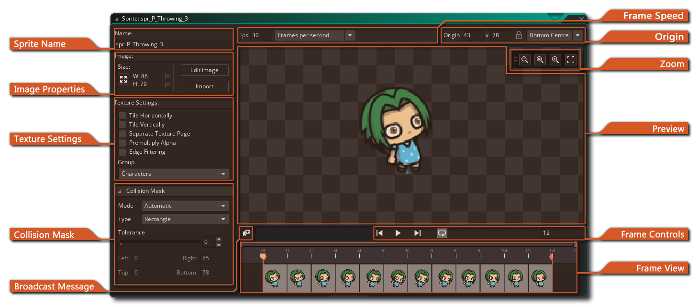
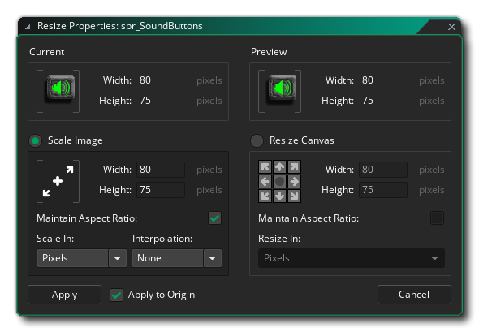
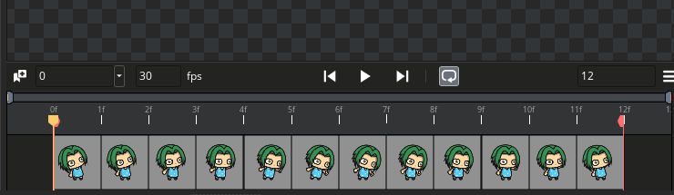
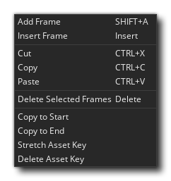
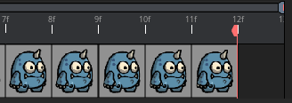
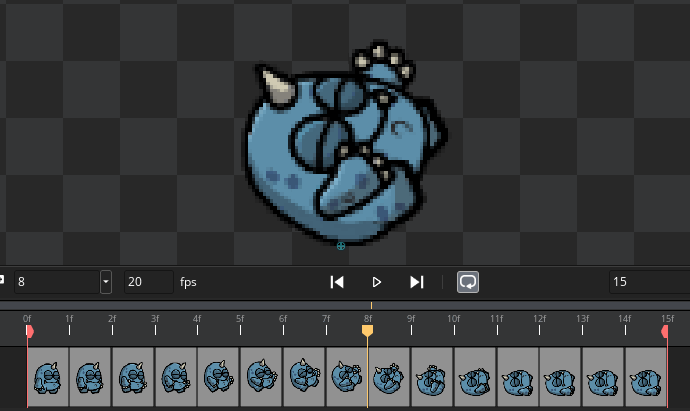

The sprite editor is where you set the general properties for
any sprite resource that you make. You can open this window by
creating a new sprite (right-click  on the
sprite resource folder and select "Create"), by double-clicking
on the
sprite resource folder and select "Create"), by double-clicking
 on an existing sprite or by right-clicking
on an existing sprite or by right-clicking  an
existing sprite and selecting "Properties". The parts that make up
the Sprite Editor are as follows:
an
existing sprite and selecting "Properties". The parts that make up
the Sprite Editor are as follows:
Here you can name the sprite . The sprite name is what will be used throughout your game project to identify the sprite as a resource and can only be alpha-numeric and may only use the underbar "_" symbol. While you can use numbers in the sprites name, the name cannot start with a number as that would make it an invalid resource name when using GML or DnD™.
In this section you can set the image size by clicking the Sprite Size button
. This will open the following window: 
Here you can see a preview of the sprite before and after applying the chosen transforms, and the section below is for setting the new sprite properties and is split into two parts:
- Scale Image: With this option you can resize the sprite draw canvas and any images contained on the sprite will be stretched and scaled to fit the new size. You can choose to scale and maintain the aspect ratio of the base image, and you can also choose whether to scale in Pixels or in Percentage. Depending on the type of image you are working with you may also want to enable linear interpolation or not (in general, linear interpolation will "smooth" pixels over an area and so is best left off for pixel art).
- Resize Canvas: This option will resize the draw canvas to the new size without scaling the contents. You can set the "anchor" point for the resize using the directional arrows then set the size value. There is an option to maintain aspect ratio when resizing the canvas and at the bottom you can choose to set the resize values in either pixels or as a percentage.
When you are happy with the new size, you can click Apply to apply the changes and close the Resize Properties window. Note that when applying a change in scale or size to a sprite, you can choose to have the change applied to the origin of the sprite too, by checking the Apply to Origin checkbox beside the "Apply" button. When checked - if the origin is not one of the default settings and is not locked in the sprite - then its position will be scaled to match the change to the size of the sprite. When un-checked, no scaling will be applied to the origin, and if the origin is not a custom value or is locked, then it will be grayed out and unavailable. You can set this option for all sprites from the Sprite Editor Preferences.
NOTE: This option is only available for bitmap sprites and will be greyed out for SWF or skeleton animation sprites.
In this section you can also either open the Image Editor to draw on your sprite, or you can click on the "Import" button to import a previously created sprite. Sprites can be imported from most common bitmap formats (PNG, JPG, GIF, etc...) but GameMaker Studio 2 also supports vector sprites (SWF) and skeletal animation sprites (Spine). For more information on these formats, please see the section on Importing Non-Bitmap Sprites. Note that when importing bitmap sprites you can select multiple image files in the file explorer and each one will be added to the same sprite as separate sub-images (frames).
This section of the sprite properties window deals with how GameMaker Studio 2 stores the images that make up your sprite on texture pages for use with devices and browsers. For desktop platforms this is not normally too important, but when you start to develop for mobile or web the proper management of your image assets (textures) becomes very important as poorly managed textures can have detrimental effect on your game, causing performance issues.
The Tile Horizontally and Tile Vertically check boxes are, by default, not normally checked as most times you do not want to tile sprites. However, in certain circumstances you may wish them to tile, meaning that you should check these options, especially if you are going to be scaling the view or room as scaling can introduce artefacts into the graphics of a game if the texture page is not generated properly.
If your sprite is going to be used as a texture map, then you should check the Separate Texture Page box and the sprite will be given a texture page all of its own (note that each sub-image will also get its own texture page, so if your sprite has 10 images you will generate 10 texture pages). This will increase the texture memory needs of your game tremendously and so great care must be taken when using this option. Also note that in general if your sprite is using this option for 3D, then the textures should be a power of 2 (ie> 128x128, 256x256, 512x512 etc...).
The next option is to enable pre-multiplied alpha for the sprite images. When enabled, this will pre-multiply the alpha of all sub-images of the sprite, and this is normally only necessary drawing sprites to surfaces, or for some specific special effects. For normal sprite use you should not see any noticeable difference between the normal sprite and the pre-multiplied one.
We also have an Edge Filtering option. This option is specifically for when you have linear interpolation enabled for your game and you are seeing "halos" of colour around your sprites. This is caused by the hardware interpolating from multiple source texels on the texture page all at once, and can be particularly obvious when you scale games up in resolution. Enabling this will filter the edge pixels to take on the colour of the nearest full alpha sprite pixel and so blend the interpolated pixels without the halo that was present previously.
Finally, you can chose the texture group that you wish the sprite resource to belong to. Basically, a texture group (previously defined in the Texture Group Manager) is something that you can set up so that all the image resources that you need for specific rooms or levels of your game can be stored together. So, for example, you can have all your level 1 images in one texture group, all your level 2 images in another etc... and GameMaker Studio 2 will try to place all those grouped resources on the same texture page to reduce texture page swapping while your game is running on the chosen target platform.
NOTE: This may not always be necessary and the performance increase from this method will depend on whether the target device is CPU bound or GPU bound.
You can find out more about texture pages here.
All sprites have a collision mask which corresponds to the area of the sprite that will be used to detect collisions when the sprite is assigned to an instance. You can first set the Mode for the collision mask, which can be one of the following:
Apart from the collision mask Mode, there are also various types of collision mask which you can choose from the drop down menu:
- Automatic: GameMaker Studio 2 will calculate the collision mask automatically based on the sprite alpha values (this will depend on the Tolerance setting explained below).
- Full Image: The mask will be calculated with it's bounds being the same as the left, right, top and bottom bounds of the sprite.
- Manual: Selecting this means that you wish to set the bounds of the collision mask using the input values for left, right, top and bottom.
The following image illustrates the different mask options:
- Rectangle: A simple rectangular collision mask. This is the fastest to resolve when used in your project.
- Rotated Rectangle: This is a simple rectangular collision mask which will rotate along with the image_angle value of the instance with the sprite assigned. This is slower to resolve than the regular rectangular collision mask, but faster than a precise collision mask.
- Ellipse: Creates an elliptical collision mask. This is slower to resolve.
- Diamond: Creates a "diamond" collision mask. This is slower to resolve and generates more CPU overhead.
- Precise: This creates a precise collision mask based on the outline of the sprite. If the sprite has multiple sub-images, then this will be a composite of the edges of all the sub-images placed over each other. Note that the precise mask will be clipped to the bounding box if the Mode is set to Manual and you change the default values. This is very slow and generates a lot of CPU overhead.
- Precise (per frame): This creates a precise collision mask on a per-frame basis (ie: the mask will change to conform to the outline of each different frame). Note that the precise mask will be clipped to the bounding box if the Mode is set to Manual and you change the default values.This is by far the slowest type of collision mask to resolve and should be avoided except in very, very specific and infrequent cases.

The collision checking options are very important ones for your game, as they will directly influence how your objects interact and how your game runs, with the wrong settings even having a negative impact on the over all performance. Why is that? Well, whenever two instances meet, and both instances have a valid mask, a collision event is generated by checking the overlap of the mask, which can either be precise or not, and adapted to the image index or not. Below is an image to illustrate this:

Beneath this, you have the alpha tolerance slider, which indicates the tolerance for creating the mask with respect to the transparency of the sprites pixels - with a higher tolerance pixels that are partially transparent are left outside the mask, while with a lower tolerance the mask will take into account those pixels. This influences both the bounding box (when not set to manual) and the mask for precise collision checking.
Finally you can set the Bounding Box limits for the mask. The bounding box is the name given to the rectangular area that the sprite mask fits in. Only pixels inside this bounding box are used for the mask and will be involved in collision checking, and by default this is automatically computed, taking the alpha tolerance into account. If you have "precise (per frame)" checked then this will be separate for each sub-image too. When setting it yourself, you can input the values in the boxes for left, right top and bottom, or you can click
in the sprite view and drag to "draw" it over the sprite. Note that when "drawing" the bounding box, the mask is automatically generated to fit within the end values.
It is worth noting that if you go to the Preview window, you can adjust the collision mask using the "handles" found in each corner. Clicking and dragging these will adjust the collision mask just the same as inputing values for the bounding box would.
This button will add a broadcast message to the sprite timeline in the frame view, opening a dialogue where you can add the message to be broadcast. The message will be added wherever the timeline marker is in the frame view and consists of simple string that can be picked up in the Asynchronous System Event when it is triggered and then acted on.

Once added, the message will be shown in the Frame View, and you can use click the right mouse buttonon it to open a menu where you can delete the message or edit it. For more information on Broadcast Messages please see here.
In this section you can set the speed at which the animation frames should be played back from the input box on the left. The frame speed setting can either be based on "Frames per second", or "Frames per game frame", where a setting of 30 "Frames per second" will show 30 frames of the animation in one second, while a setting of 30 "Frames per game frame" will try to show all 30 frames in a single game step, so "Frames per game frame" values are usually set to 1 or lower.
It's important to note that the Frame Speed settings will not only affect the playback of the animation in the preview window, but will also govern how the sprite is animated in your games. The speed you set here will show the sprite preview as it will run in the game with an image speed of 1, but this can be set in code using the image_speed variable meaning the sprite will run faster or slower. So, for example, if you set the sprite to use 10 "frames per second" and then set the image_speed to 0.5, the game will draw the sprite at half speed - 5 frames per second. Conversely, if we set the image_speed for the same sprite to 2, in the game it will be drawn animated twice as fast - 20 frames per second. Note that the frame speed can also be set in the Image Editor.
The top bar of the sprite editor contains the sprite origin properties. This is the point on the sprite that corresponds to its position within the room, ie: when you create an instance at a particular x/y position, the origin of the sprite is placed there. By default it is the top left corner of the sprite but it is often more convenient to use the centre or you may wish to have some other position used (like for a platform game character you might want bottom middle), so you can click
To the top right of the Preview window you ahve the zoom controls. These are used to zoom the preview image in or out as required (you can also use the mouse wheel to achieve this effect). Click the
icon to make the image 1:1 with the actual pixels, or click the center fit icon to zoom out and center the image.
The sprite preview window shows the sprite as it will look in the game, and can be zoomed in or out by using the mouse wheel
, and panned around by using the
+
The frame controls are for playing back in the preview window the animation of the frames, with the play button starting/stopping the animation and the Loop button
used to set whether the sprite loops
(goes back to frame 1 when the last frame is reached) or ping-pongs
(goes backwards through the frames when the last frame is reached). Note that the loop/ping-pong option has no relevance on how the sprite is displayed in the game and are just a visual reference - all sprites will loop when animated in game. The same goes for loop-points that can be set in the Frame View (see below for more information) - these are purely visible in the sprite editor and designed to help you test out your animations, but will have no effect on how the sprite animation is displayed in your games.
This part of the sprite editor shows each of the different frames that make up a single sprite set along a sequence timeline. You can click
/
+
The right mouse button menu has the following options: 
- Add Frame - Add a new frame to the animation at the end.
- Insert Frame - Insert a new frame in the animation after the currently selected frame.
- Cut / Copy / Paste - Cut, copy and paste one or more frames.
- Delete Selected Frames - Delete the currently selected frame or frames.
- Copy To Start - Copy the selected frame to the start of the animation.
- Copy To Finish - Copy the selected frame to the end of the animation.
- Stretch Asset Key - Stretch the selected frame to fill in any empty frames. To use this, add some empty frames after the frame you want to stretch, then use the "Delete asset key" options on these empty frames to remove the frame contents but not actually remove the frame. Finally, select this option and the frame will be stretched to fill the empty frames.
- Delete Asset Key - This can be used to remove an image from a frame without actually removing the frame itself.
Apart from the option given above to stretch a frame, you can also position the mouse on the edge of a frame and then when the cursor changes to a double arrow, simply click
A stretched frame will take more time to be shown, just as if you'd duplicated the same frame multiple times.Finally, you can click and drag the start and end points for the animation loop in the frame view, so that you can see how selected parts of the animation behave when looped. This is done by clicking

Note that the loop points are purely a visual aid when working with the animation and will not have any influence on how the animation is shown in the game.